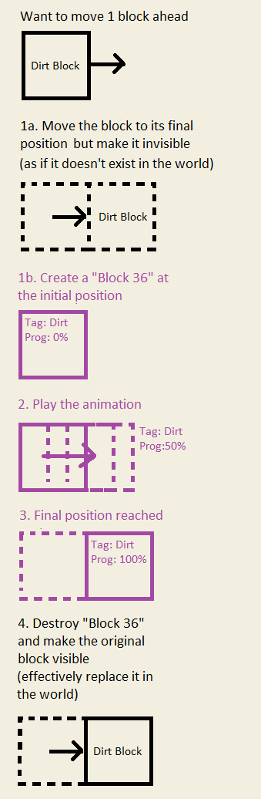

Weird Piston Behavior Explained
Oct. 31, 2020, 16:19:51
A few months ago, I was watching ilmango's video on how to build a TNT tree farm in 1.15 (ilmango is a technical Minecrafter who makes great redstone builds and tutorials).
I discovered a piston trick in it which I had never seen before and which contradicted my previous understanding of how "Minecraft Redstone" works. I immediately set out to learn why this trick was ever possible...
Now several months later, I think I finally have an answer.
Minecraft Redstone Crash Course
If you have played Minecraft before or have some basic knowledge of Minecraft redstone, you are free to skip this section.
Exercise - How will it move?
Now as an exercise, let's analyze one contraption that uses some of the blocks I introduced earlier. (If you can't understand some parts of the explaination, please check the previous section)
We have a contraption as such:
How will it move once being constructed?
First we notice there is a redstone block next to the piston, so reasonablly the piston will fire and push the slime blocks in front of it.
Since the restone block is attached to one of the slime blocks, they all will be pushed by the piston like so:
However, once the whole contraption is in this state, the piston is no longer powered by the redstone block (not attached to it).
So, the piston will retract and pull the 3 blocks with it. And the whole contraption is back to the initial stage when it was first constructued.
Wait? Doesn't that mean the contraption is in an infinite push-pull loop?
You guessed right! That is exactly what will happen if you try it in game.
If you understand this analysis and predict it as the desired behavior for this kind of contraptions as I did, then you will find the following contraption really werid (see demo below).
Somehow the second contraption didn't go crazy as we predicted in the first one despite having all the similarities in construction.
How weird and interesting...
Why It's Worth Looking Into
As a programmer, I find this problem really interesting.
Weird behaviors in a program like such often reveal more than just the problem or bug itself, but also a way for us to analyze the inner workings of the program. In this case, if we can carefully control and analyze how we trigger this weird piston behavior, we may find a way to understand how the Minecraft's piston mechnics is implemented in code!
To solve a problem, the first step is always to understand the problem better and to do some initial research. In this case, there are 2 pieces of information that is crucial to our discussion. Let's review them now.
Divergent 1: Block 36
Minecraft is a game about blocks. Everything from dirt to air to water and even players, are bounded by Minecraft's "blocky rules".
However, just having static blocks certainly isn't enough for Minecraft. It would be like living in a world of static images if there weren't any animation and motion that could bring things to life.
As we saw earlier in the demo, the movement of pistons is not shown with just two static images of the the intial and final state of blocks being pushed and pulled by the pistons. Instead, we perceived a smooth transition of blocks being moved.
If I freeze the game and advance the game one tick at a time (using gnembon's carpet mod here), we can see how the piston moves as the time progresses:
Just like how videos and flip-books animate things, Minecraft shows us a fast series of images of the piston moving at different stages which when combined we perceive as pistons moving continuously.
From the programmers' standpoint, this animation introduces some troubles. As the rest of the world are all static blocks, the programmers need a way to make an exception for those moving blocks to let them temporarily break Minecraft's "blocky rules" and move freely in space. Also they need to mark and track those moving blocks so they can be processed differently with respect to the rest of the world.
"Block 36" or "moving_piston" block, as it is now called in game, is created just for such a purpose.
"Block 36" is an invisible in-game block that is used to represent a regular block that is currently moving.
A "Block 36" contains 2 pieces of information. First, it records what block is currently moving. Second, it keeps track of how far the animation has progressed/how far the blocks has moved.
If it helps in anyway, just think of "Block 36" as a transition block.
It provides a visually smooth transition of one block moving from one place to another without affecting too much on the rest of the world. It's lifecycle looks like this:

One other property of "Block 36", which is the most important one in relation to our discussion, is that "Block 36" can STOP pistons from moving just like an obsidian block (see demo below).
Initially the piston was free to move and could push and pull blocks in front of it. Once an obsidian block was placed on the path it is pushing, the piston can no longer fire as it was obstructed by that obsidian block.
Then I ran the command
The pistons failed to fire after being powered, which proved that "Block 36" can't be pushed and can prevent pistons firing.
Divergent 2: Block Push Limit and DFS
Programming is an art of balancing
Understand the Problem
After some experimenting, the following contraptions fell into infinite push-pull loop after being constructed:
But not those ones:
Let's leave the first pair for now, and focuse on the last two pairs.
If you
Useful Links/References:
Sprite image CSS
Slide show CSS - W3School
Sprite image source - FANDOM
gnembon carpet mod source code - Github
Block 36 rename - Reddit
Moving Piston Block - MC Wiki
Block 36 Description - FANDOM
Free use of Minecraft gameplay videos - help.minecraft.net
{kind=link}